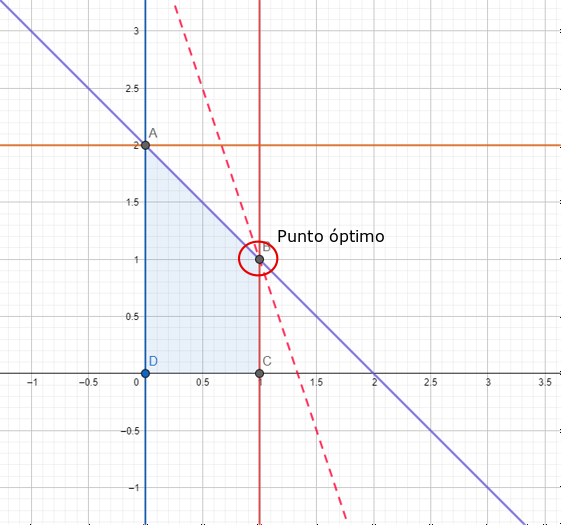
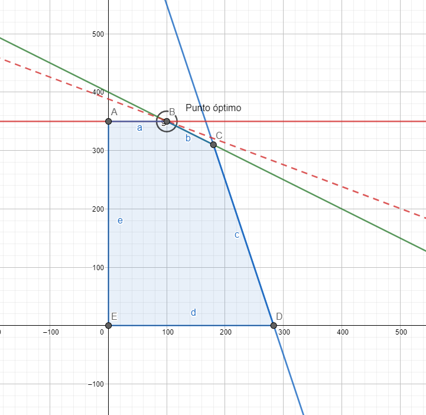

1. Introducción.¶
Este es el primer capítulo nos centraremos en la utilización de OR-Tools, como herramienta libre y gratuita para resolver problemas de programación lineal de una forma libre y gratuita, con la base de programación de python. De entre los muchos ámbitos de trabajo a los que se les puede aplicar este tipo de programación lineal, se pueden destacar el siguiente conjunto de problemas:
Ruta óptima de vehículos. Gracias a estas aplicaciones, se pude encontrar la ruta óptima que debe ser utilizada, para que un conjunto de vehículos visiten diferentes puntos geográficos de manera que la distancia recorrida sea mínima.
Programación de tareas o trabajos a realizar. Encontrar la solución óptima para un conjunto complejo de tareas, algunas de las cuales deben realizarse antes que otras, en un conjunto fijo de máquinas, u otros recursos.
Embalaje de contenedores. Empaquetar tantos objetos de distintos tamaños como sea posible en un número fijo de contenedores con capacidades máximas.
Resolver problema de la dieta. fue uno de los primeros problemas sobre optimización, motivado por el deseo del ejercito americano de asegurar unos requerimientos nutricionales al menor coste. El problema fue analizado y resuelto por George Stigler usando la programación lineal en 1947.
En la mayoría de los casos, los problemas de este tipo tienen un gran número de posibles soluciones, de tal manera que demasiadas para que un ordenador pueda buscarlas todas en un tiempo aceptable. Para superar esto, OR-Tools utiliza algoritmos de última generación para reducir el conjunto de búsqueda, con el fin de encontrar una solución óptima (o cercana a la óptima). Hay que tener esta última expresión muy en cuenta, pues con OR_Tools, no siempre se encuentra la solución que desde un punto de vista estrictamente matemático sea la óptima, pero sí una solución muy cercana a ella.
Con OR-Tools se pueden encontrar solvers para las siguientes cuestiones:
Programación lineal y entera. En este caso el optimizador lineal denominado Glop, es capaz de encontrar soluciones optimas para problemas de programación lineal o entera. La definición de este tipo de problemas se hará en apartados posteriores.
(******************Seguir en un futuro ampliando este apartado)
Para poder trabajar con el optimizador OR_Tools lo primero que hay que hacer es instalarlo en la versión de Python con la que se tabaje, y para hacer esto se puede utilizar el programa pip de Python que como a es sabido es una forma fácil y cómo de poder instalar paquetes en este lenguaje de programación, en concreto simplemente se tendrá que ejecutar lo siguiente en la línea de comandos:
python -m pip install –upgrade –user ortools
Para más información sobre cómo instalar este paquete se puede visitar este enlace, donde el lector interesado podrá encontrar más información sobre este tema.
2. Problemas de optimización lineal.¶
Se denomina problema de optimización lineal aquel en el que se pretende encontrar una solución óptima a un problema planteado mediante ecuaciones de tipo lineal, tanto en lo que se refiere a la función que se quiere optimizar como para las restricciones impuestas al problema. Para los lectores interesados en esta materia, se le puede dar como referencia el contenido que existe en el libro Mosk modeling cookbok.
Como ejemplo práctico de problema de programación lineal, se puede presentar el definido en la siguiente ecuación.
En el problema anterior, como puede verse, tanto la función que se quiere optimizar, como las restricciones son de tipo lineal.
Para resolver este tipo de problemas, Google ofrece dos tipos de herramientas :
1.- Glop. Es el optimizador lineal interno de Google, disponible como código abierto. Puedes acceder a Glop a través de la envoltura del solucionador lineal OR-Tools, que es una envoltura para Glop, así como para otros solucionadores de optimización lineal de terceros. Mas adelante, se pondrán ejemplos para que el lector aprenda a utilizar este optmizador.
2.- El The Linear Optimization Service in Google Apps Script, permite a los desarrolladores realizar llamadas a funciones para resolver problemas de optimización lineal. Se basa en Glop para los problemas de optimización lineal puros en los que todas las variables pueden tomar valores reales. Si alguna de las variables está restringida a los números enteros, el servicio utiliza SCIP, del Zuse-Institut de Berlín.
2.1. Elementos básicos de un problema de optimización.¶
El objetivo fundamental de un problema de optimización es encontrar la mejor solución a un problema entre un gran conjunto de soluciones posibles. (A veces, y sobre todo cuando un problema es muy complejo, el investigador se puede conformar con encontrar cualquier solución factible; OR-Tools puede hacer eso también).
Un problema típico de optimización, se puede encontrar dentro del siguiente enunciado. Supongamos que una empresa de transporte entrega paquetes a sus clientes utilizando una flota de camiones. Cada día, la empresa debe asignar paquetes a los camiones, y luego elegir una ruta para que cada camión entregue sus paquetes. Cada posible asignación de paquetes y rutas tiene un coste, basado en la distancia total de viaje de los camiones, y posiblemente también en otros factores. El problema es elegir la asignación de paquetes y rutas que tenga el menor coste.
Cuando se trabaja con un problema de optimización, se deben distinguir dos elementos básicos:
1.- La función objetivo.Representa cantidad que se quiere optimizar. En el ejemplo anterior, el objetivo es minimizar el coste. Para plantear un problema de optimización, hay que definir una función que calcule el valor del objetivo para cualquier solución posible. Esto se llama la función objetivo. En el ejemplo anterior, la función objetivo calcularía el coste total de cualquier asignación de paquetes y rutas.
Una solución óptima es aquella para la que el valor de la función objetivo es el mejor. (“Mejor” puede ser un máximo o un mínimo).
2.- Las restricciones. Son el conjunto de soluciones posibles, basadas en los requisitos específicos del problema. Por ejemplo, si la empresa de transporte no puede asignar a los camiones paquetes por encima de un peso determinado, esto impondría una restricción a las soluciones. Una solución factible es aquella que satisface todas las restricciones dadas para el problema, sin ser necesariamente óptima.
Los pasos que deberán darse para resolver un problema de programación lineal son los siguientes:
1.- Importar las librerías necesarias.
2.- Declarar el solver.
3.- Crear las variables.
4.- Definir las restricciones.
5.- Definir la función objetivo.
6.- Ejecutar el solver y mostrar los resultados.
La materialización de cómo se implementan estos pasos con OR-Tools, se muestra en los siguientes ejemplos.
2.2. El optimizador lineal Glop.¶
Como ya se ha indicado anteriormente, el optimizador lineal Glop de google permite dar solución a los problemas de optimización lineal, a él se va a dedicar el presente apartado.
Entre las ventajas que ofrece está herramienta está en que se puede considerar que es rápido, eficiente en cuanto a memoria y numéricamente estable. A continuación vamos a mostrar cómo utilizar Glop para resolver un problema lineal sencillo . El sencillo problema que se pretende resolver es el que se ha mostrado unas lineas más arriba.
Para entender mejor el significado de este tipo de problemas, y dado que el problema que se pretende resolver ofrece la sencillez suficiente para comprender el significado de lo que vamos buscando, en primer lugar vamos a encontrar la solución mediante un sencillo método gráfico.
Paara ello hacemos uso de la calculadora gráfica que nos ofrece geogebra, que es una herramienta gratuita disponible en Internet y por lo tanto al alcance de cualquiera. La solución que obtenemos para este ejemplo, la vemos en el siguiente gráfico.

Como puede verse, de forma rápida se puede ver que la solución se encuentra en el punto x = 1 , y = 1.
Veamos a continuación cómo poder obtener el resultado utilizando el optimizador lineal GLOP. En primer lugar lo que se debe hacer es importar la librería necesaria para poder construir todo esto.
from ortools.linear_solver import pywraplp
A continuación creamos el solver mediane una instancia de la clase GLOP.
# Creamos el optmizador linel derivado de GLOP.
solver = pywraplp.Solver.CreateSolver('GLOP')
A continuación creamos las variables, con las restricciones que deben cumplir para ste problema.
# Creamos las variables x e y.
x = solver.NumVar(0, 1, 'x')
y = solver.NumVar(0, 2, 'y')
print('Número total de variables =', solver.NumVariables())
Número total de variables = 2
Creamos la restricción lineal que nos indica el problema
# Creamos la siguiente restricción lineal: 0 <= x + y <= 2.
ct = solver.Constraint(0, 2, 'ct')
ct.SetCoefficient(x, 1)
ct.SetCoefficient(y, 1)
print('Number of constraints =', solver.NumConstraints())
Number of constraints = 1
Creamos la función objetivo
# Create the objective function, 3 * x + y.
objective = solver.Objective()
objective.SetCoefficient(x, 3)
objective.SetCoefficient(y, 1)
objective.SetMaximization()
y por último resolvemos.
solver.Solve()
print('Solucion:')
print('valor objetivo =', objective.Value())
print('x =', x.solution_value())
print('y =', y.solution_value())
Solucion:
valor objetivo = 4.0
x = 1.0
y = 1.0
Como puede verse del resultado de la ejecución del código anterior, los valores x e y son exactamente los mismos que los obtenidos utilizando el sistema gráfico.
Otro ejemplo sería el siguiente
Utilizando procedimiento gráfico tenemos el siguiente resultado 
El código completo para resolver este problema sería el siguiente
#Importamos la clase correspondiente
from ortools.linear_solver import pywraplp
#Creamos al solver
solver = pywraplp.Solver.CreateSolver('GLOP')
#Creamos las variables necesarias
x = solver.NumVar(0, solver.infinity(), 'x')
y = solver.NumVar(0, solver.infinity(), 'y')
print('Número total de variables {}'.format(solver.NumVariables()))
#Definimos las restricciones
# Restricción 0: 2x + 4y <= 1600.
solver.Add(2*x + 4 * y <= 1600.0)
# Restricción 1: 6x + 2y <= 1700
solver.Add(6* x + 2*y <= 1700.0)
# Restricción 2: y <= 350.
solver.Add(y <= 350.0)
print('Number of constraints =', solver.NumConstraints())
# Definimos la función objetivo
solver.Maximize(3*x+8*y)
# Ejecutamos el solver
status = solver.Solve()
# Sacamos la solución
if status == pywraplp.Solver.OPTIMAL:
print('Solution:')
print('Objective value =', solver.Objective().Value())
print('x =', x.solution_value())
print('y =', y.solution_value())
else:
print('The problem does not have an optimal solution.')
Número total de variables 2
Number of constraints = 3
Solution:
Objective value = 3100.0
x = 100.00000000000007
y = 350.0
Podemos ver que la solución sería x=100 e y=350 que son los datos que hemos obtenido con la solución gráfica.
La solución gráfica es muy fácil de obtener cuando se está trabajando con dos variables, pero sin embargo cuando el número de variables aumenta, hay que acudir a métodos analíticos que mediante la formulación matemática correspondiente nos ofrece el resultado buscado. Un ejemplo con tres variables lo tenemos en el siguiente problema.
Siguiendo las pautas dadas en los ejemplos anteriores, el código necesario para resolver este problema sería el siguiente.
from ortools.linear_solver import pywraplp
#Creamos al solver
solver = pywraplp.Solver.CreateSolver('GLOP')
# declarar la variable x, con límite inferior 0 y sin límite superior
x = solver.NumVar(0, solver.infinity(), "x")
# declarar variable y, con límite inferior 0 y sin límite superior
y = solver.NumVar(0, solver.infinity(), "y")
# declarar la variable z, con límite inferior 0 y sin límite superior
z = solver.NumVar(0, solver.infinity(), "z")
# agregar un objetivo al solucionador
objective = solver.Objective()
# agregar términos al objetivo de manera que la función objetivo resulte la correcta
objective.SetCoefficient(x, 1)
objective.SetCoefficient(y, 2)
objective.SetCoefficient(z, 3)
# declarar el problema como un problema de maximización
objective.SetMaximization()
# agregar restricción: 2x + y + z <= 20
constraint = solver.Constraint(-solver.infinity(), 20)
constraint.SetCoefficient(x, 2)
constraint.SetCoefficient(y, 1)
constraint.SetCoefficient(z, 1)
# agregar restricción: x + y + z <= 15
constraint = solver.Constraint(-solver.infinity(),15)
constraint.SetCoefficient(x, 1)
constraint.SetCoefficient(y, 1)
constraint.SetCoefficient(z, 1)
# agregar restricción: x - y - z> = 0
constraint = solver.Constraint(0,solver.infinity())
constraint.SetCoefficient(x, 1)
constraint.SetCoefficient(y, -1)
constraint.SetCoefficient(z, -1)
# Resuelvo problema
solver.Solve()
#Solución óptima para x
print("x_opt: ", x.solution_value())
#Solución óptima para y
print("y_opt: ", y.solution_value())
#Solución óptima para x
print("z_opt: ", z.solution_value())
#Valor de la función objetivo
print("valor óptimo: " + str(x.solution_value()+2*y.solution_value()+3*z.solution_value()))
# O también
print('valor objetivo_2 =', objective.Value())
x_opt: 6.666666666666667
y_opt: 0.0
z_opt: 6.666666666666667
valor óptimo: 26.666666666666668
valor objetivo_2 = 26.666666666666668
2.3. Usando arrays para definir el modelo.¶
En el ejemplo anterior, se tienen tan sólo tres variables para optimizar el problema y entonces perfectamente se puede hacer el planteamiento sin gran esfuerzo, ahora bien cómo ¿ podemos plantear el problema cuando en lugar de tres variables se podrían tener 20 por ejemplo?. En esta situación tendriamos que acudir a reformular el problema de otra manera, y con la finalidad de que tenga más bien una aportación didáctica, a continuación se va a reformular el anterior problema a fin de que el lector pueda ver cómo poder hacerlo cuando se esté trabajando con un número considerable de variables.
En primer lugar, se tendrán que definir los parámetros que van a acompañar a las variables del problema.
para_objetivo =[1,2,3] # coeficientes función objetivo
para_restri =[ #coeficientes para restricciones lineales
[2,1,1],
[1,1,1],
[-1,1,1] #Observar que esta ecuación la cambio de signo
]
tope_restri =[20,15,0] #tope para las restricciones
nombres =['x','y','z'] #los nombres de las variables
Para tener una uniformidad en la definición del problema, la tercera restricción la he cambiado de de signo, a fin de que todas las restricciones tengan una desigualdad del tipo menor o igual.
Con estas definiciones previas, la actuación sería la siguiente.
Definimos los paquetes necesarios y creamos el solver correspondiente.
from ortools.linear_solver import pywraplp
#Creamos al solver
solver = pywraplp.Solver.CreateSolver('GLOP')
Declaramos las variables
x = {}
for h in range(len(para_objetivo)):
x[h] = solver.NumVar(0, solver.infinity(),nombres[h])
print('Número total de variables ', solver.NumVariables())
Número total de variables 3
A continuación toca añadir las restricciones
for h in range(len(tope_restri)):
constraint = solver.Constraint(-solver.infinity(), tope_restri[h])
for j in range(len(para_objetivo)):
constraint.SetCoefficient(x[j],para_restri[h][j])
print('Número total de restricciones: ',solver.NumConstraints())
Número total de restricciones: 3
Definimos a continuación la función objetivo
objective = solver.Objective()
# agregar términos al objetivo
for h in range(len(para_objetivo)):
objective.SetCoefficient(x[h],para_objetivo[h])
objective.SetMaximization()
Y ya estamos en condiciones de resolver el problema
# Resuelvo problema
solver.Solve()
for h in range(len(para_objetivo)):
print("Solución para ",x[h].name(),":",x[h].solution_value())
# Valor función objetivo
print('valor objetivo =', objective.Value())
Solución para x : 6.666666666666667
Solución para y : 0.0
Solución para z : 6.666666666666667
valor objetivo = 26.666666666666668
2.3.1. El problema de la dieta de Stigler.¶
Como puede verse en el planteamiento del anterior problema, el hecho de poder utilizar arrays mejora sustancialmente la formulación del modelo de optimización lineal. Pero aún se ve mucho mejor esta mejora si el número de variables aumenta sustancialmente.
Esto se puede ver en el denominado problema de la dieta de Stigler, que se puede ver en el siguiente enlace, pero que ppor su interés, se reproduce en este apartado.
El enunciado inicial del problema se puede ver en este enlace de la wikipedia. Se trata de un problema de optimización lineal formulado popr George Stigler, y cuyo enunciado es el siguiente:
Para un hombre moderadamente activo que pesa 154 libras, ¿qué cantidad de cada uno de los 77 alimentos debe consumir diariamente para que la ingesta de nueve nutrientes sea al menos igual a las cantidades dietéticas recomendadas (RDA) sugeridas por el Consejo Nacional de Investigación en 1943, siendo el coste de la dieta mínimo?
Esta dieta va a exigir los requerimientos mínimos que se indican a continuación:
Nutrientes |
Ingesta diaria recomendada |
|---|---|
Calories |
3,000 Calories |
Protein |
70 grams |
Calcium |
.8 grams |
ron |
2 milligrams |
itamin A |
,000 IU |
hiamine (Vitamin B1) |
.8 milligrams |
iboflavin (Vitamin B2) |
.7 milligrams |
Niacin |
18 milligrams |
Ascorbic Acid (Vitamin C) |
75 milligrams |
El conjunto de alimentos que evaluó Stigler era un reflejo de la época (1944). Los datos nutricionales que aparecen a continuación son por dólar, no por unidad, por lo que el objetivo es determinar cuántos dólares hay que gastar en cada alimento.
Commodity |
Unit |
1939 price (cents) |
Calories |
Protein (g) |
Calcium (g) |
Iron (mg) |
Vitamin A (IU) |
Thiamine (mg) |
Riboflavin (mg) |
Niacin (mg) |
Ascorbic Acid (mg) |
|---|---|---|---|---|---|---|---|---|---|---|---|
Wheat Flour (Enriched) |
10 lb. |
36 |
44.7 |
1411 |
2 |
365 |
0 |
55.4 |
33.3 |
441 |
0 |
Macaroni |
1 lb. |
14.1 |
11.6 |
418 |
0.7 |
54 |
0 |
3.2 |
1.9 |
68 |
0 |
Wheat Cereal (Enriched) |
28 oz. |
24.2 |
11.8 |
377 |
14.4 |
175 |
0 |
14.4 |
8.8 |
114 |
0 |
Corn Flakes |
8 oz. |
7.1 |
11.4 |
252 |
0.1 |
56 |
0 |
13.5 |
2.3 |
68 |
0 |
Corn Meal |
1 lb. |
4.6 |
36.0 |
897 |
1.7 |
99 |
30.9 |
17.4 |
7.9 |
106 |
0 |
Hominy Grits |
24 oz. |
8.5 |
28.6 |
680 |
0.8 |
80 |
0 |
10.6 |
1.6 |
110 |
0 |
Rice |
1 lb. |
7.5 |
21.2 |
460 |
0.6 |
41 |
0 |
2 |
4.8 |
60 |
0 |
Rolled Oats |
1 lb. |
7.1 |
25.3 |
907 |
5.1 |
341 |
0 |
37.1 |
8.9 |
64 |
0 |
White Bread (Enriched) |
1 lb. |
7.9 |
15.0 |
488 |
2.5 |
115 |
0 |
13.8 |
8.5 |
126 |
0 |
Whole Wheat Bread |
1 lb. |
9.1 |
12.2 |
484 |
2.7 |
125 |
0 |
13.9 |
6.4 |
160 |
0 |
Rye Bread |
1 lb. |
9.1 |
12.4 |
439 |
1.1 |
82 |
0 |
9.9 |
3 |
66 |
0 |
Pound Cake |
1 lb. |
24.8 |
8.0 |
130 |
0.4 |
31 |
18.9 |
2.8 |
3 |
17 |
0 |
Soda Crackers |
1 lb. |
15.1 |
12.5 |
288 |
0.5 |
50 |
0 |
0 |
0 |
0 |
0 |
Milk |
1 qt. |
11 |
6.1 |
310 |
10.5 |
18 |
16.8 |
4 |
16 |
7 |
177 |
Evaporated Milk (can) |
14.5 oz. |
6.7 |
8.4 |
422 |
15.1 |
9 |
26 |
3 |
23.5 |
11 |
60 |
Butter |
1 lb. |
30.8 |
10.8 |
9 |
0.2 |
3 |
44.2 |
0 |
0.2 |
2 |
0 |
Oleomargarine |
1 lb. |
16.1 |
20.6 |
17 |
0.6 |
6 |
55.8 |
0.2 |
0 |
0 |
0 |
Eggs |
1 doz. |
32.6 |
2.9 |
238 |
1.0 |
52 |
18.6 |
2.8 |
6.5 |
1 |
0 |
Cheese (Cheddar) |
1 lb. |
24.2 |
7.4 |
448 |
16.4 |
19 |
28.1 |
0.8 |
10.3 |
4 |
0 |
Cream |
1/2 pt. |
14.1 |
3.5 |
49 |
1.7 |
3 |
16.9 |
0.6 |
2.5 |
0 |
17 |
Peanut Butter |
1 lb. |
17.9 |
15.7 |
661 |
1.0 |
48 |
0 |
9.6 |
8.1 |
471 |
0 |
Mayonnaise |
1/2 pt. |
16.7 |
8.6 |
18 |
0.2 |
8 |
2.7 |
0.4 |
0.5 |
0 |
0 |
Crisco |
1 lb. |
20.3 |
20.1 |
0 |
0 |
0 |
0 |
0 |
0 |
0 |
0 |
Lard |
1 lb. |
9.8 |
41.7 |
0 |
0 |
0 |
0.2 |
0 |
0.5 |
5 |
0 |
Sirloin Steak |
1 lb. |
39.6 |
2.9 |
166 |
0.1 |
34 |
0.2 |
2.1 |
2.9 |
69 |
0 |
Round Steak |
1 lb. |
36.4 |
2.2 |
214 |
0.1 |
32 |
0.4 |
2.5 |
2.4 |
87 |
0 |
Rib Roast |
1 lb. |
29.2 |
3.4 |
213 |
0.1 |
33 |
0 |
0 |
2 |
0 |
0 |
Chuck Roast |
1 lb. |
22.6 |
3.6 |
309 |
0.2 |
46 |
0.4 |
1 |
4 |
120 |
0 |
Plate |
1 lb. |
14.6 |
8.5 |
404 |
0.2 |
62 |
0 |
0.9 |
0 |
0 |
0 |
Liver (Beef) |
1 lb. |
26.8 |
2.2 |
333 |
0.2 |
139 |
169.2 |
6.4 |
50.81 |
316 |
525 |
Leg of Lamb |
1 lb. |
27.6 |
3.1 |
245 |
0.1 |
20 |
0 |
2.8 |
3.9 |
86 |
0 |
Lamb Chops (Rib) |
1 lb. |
36.6 |
3.3 |
140 |
0.1 |
15 |
0 |
1.7 |
2.7 |
54 |
0 |
Pork Chops |
1 lb. |
30.7 |
3.5 |
196 |
0.2 |
30 |
0 |
17.4 |
2.7 |
60 |
0 |
Pork Loin Roast |
1 lb. |
24.2 |
4.4 |
249 |
0.3 |
37 |
0 |
18.2 |
3.6 |
79 |
0 |
Bacon |
1 lb. |
25.6 |
10.41 |
152 |
0.2 |
23 |
0 |
1.8 |
1.8 |
71 |
0 |
Ham, smoked |
1 lb. |
27.4 |
6.7 |
212 |
0.2 |
31 |
0 |
9.9 |
3.3 |
50 |
0 |
Salt Pork |
1 lb. |
16 |
18.8 |
164 |
0.1 |
26 |
0 |
1.4 |
1.8 |
0 |
0 |
Roasting Chicken |
1 lb. |
30.3 |
1.8 |
184 |
0.1 |
30 |
0.1 |
0.9 |
1.8 |
68 |
461 |
Veal Cutlets |
1 lb. |
42.3 |
1.7 |
156 |
0.1 |
24 |
0 |
1.4 |
2.4 |
57 |
0 |
Salmon, Pink (can) |
16 oz. |
13 |
5.8 |
705 |
6.8 |
45 |
3.5 |
1 |
4.9 |
209 |
0 |
Apples |
1 lb. |
4.4 |
5.8 |
27 |
0.5 |
36 |
7.3 |
3.6 |
2.7 |
5 |
544 |
Bananas |
1 lb. |
6.1 |
4.9 |
60 |
0.4 |
30 |
17.4 |
2.5 |
3.5 |
28 |
498 |
Lemons |
1 doz. |
26 |
1.0 |
21 |
0.5 |
14 |
0 |
0.5 |
0 |
4 |
952 |
Oranges |
1 doz. |
30.9 |
2.2 |
40 |
1.1 |
18 |
11.1 |
3.6 |
1.3 |
10 |
1998 |
Green Beans |
1 lb. |
7.1 |
2.4 |
138 |
3.7 |
80 |
69 |
4.3 |
5.8 |
37 |
862 |
Cabbage |
1 lb. |
3.7 |
2.6 |
125 |
4.0 |
36 |
7.2 |
9 |
4.5 |
26 |
5369 |
Carrots |
1 bunch |
4.7 |
2.7 |
73 |
2.8 |
43 |
188.5 |
6.1 |
4.3 |
89 |
6081 |
Celery |
1 stalk |
7.3 |
0.9 |
51 |
3.0 |
23 |
0.9 |
1.4 |
1.4 |
9 |
313 |
Lettuce |
1 head |
8.2 |
0.4 |
27 |
1.1 |
22 |
112.4 |
1.8 |
3.4 |
11 |
449 |
Onions |
1 lb. |
3.6 |
5.8 |
166 |
3.8 |
59 |
16.6 |
4.7 |
5.9 |
21 |
1184 |
Potatoes |
15 lb. |
34 |
14.3 |
336 |
1.8 |
118 |
6.7 |
29.41 |
7.1 |
198 |
2522 |
Spinach |
1 lb. |
8.1 |
1.1 |
106 |
0 |
138 |
918.4 |
5.7 |
13.8 |
33 |
2755 |
Sweet Potatoes |
1 lb. |
5.1 |
9.6 |
138 |
2.7 |
54 |
290.7 |
8.4 |
5.4 |
83 |
1912 |
Peaches (can) |
No. 2 1/2 |
16.8 |
3.7 |
20 |
0.4 |
10 |
21.5 |
0.5 |
1 |
31 |
196 |
Pears (can) |
No. 2 1/2 |
20.4 |
3.0 |
8 |
0.3 |
8 |
0.8 |
0.8 |
0.8 |
5 |
81 |
Pineapple (can) |
No. 2 1/2 |
21.3 |
2.4 |
16 |
0.4 |
8 |
2 |
2.8 |
0.8 |
7 |
399 |
Asparagus (can) |
No. 2 |
27.7 |
0.4 |
33 |
0.3 |
12 |
16.3 |
1.4 |
2.1 |
17 |
272 |
Green Beans (can) |
No. 2 |
10 |
1.0 |
54 |
2 |
65 |
53.9 |
1.6 |
4.3 |
32 |
431 |
Pork and Beans (can) |
16 oz. |
7.1 |
7.5 |
364 |
4 |
134 |
3.5 |
8.3 |
7.7 |
56 |
0 |
Corn (can) |
No. 2 |
10.4 |
5.2 |
136 |
0.2 |
16 |
12 |
1.6 |
2.7 |
42 |
218 |
Peas (can) |
No. 2 |
13.8 |
2.3 |
136 |
0.6 |
45 |
34.9 |
4.9 |
2.5 |
37 |
3701 |
Tomatoes (can) |
No. 2 |
8.6 |
1.3 |
63 |
0.7 |
38 |
53.2 |
3.4 |
2.5 |
36 |
1253 |
Tomato Soup (can) |
10 1/2 oz. |
7.6 |
1.6 |
71 |
0.6 |
43 |
57.9 |
3.5 |
2.4 |
67 |
862 |
Peaches, Dried |
1 lb. |
15.7 |
8.5 |
87 |
1.7 |
173 |
86.8 |
1.2 |
4.3 |
55 |
57 |
Prunes, Dried |
1 lb. |
9 |
12.8 |
99 |
2.5 |
154 |
85.7 |
3.9 |
4.3 |
65 |
257 |
Raisins, Dried |
15 oz. |
9.4 |
13.5 |
104 |
2.5 |
136 |
4.5 |
6.3 |
1.4 |
24 |
136 |
Peas, Dried |
1 lb. |
7.9 |
20.0 |
1367 |
4.2 |
345 |
2.9 |
28.7 |
18.4 |
162 |
0 |
Lima Beans, Dried |
1 lb. |
8.9 |
17.4 |
1055 |
3.7 |
459 |
5.1 |
26.9 |
38.2 |
93 |
0 |
Navy Beans, Dried |
1 lb. |
5.9 |
26.9 |
1691 |
11.4 |
792 |
0 |
38.4 |
24.6 |
217 |
0 |
Coffee |
1 lb. |
22.4 |
0 |
0 |
0 |
0 |
0 |
4 |
5.1 |
50 |
0 |
Tea |
1/4 lb. |
17.4 |
0 |
0 |
0 |
0 |
0 |
0 |
2.3 |
42 |
0 |
Cocoa |
8 oz. |
8.6 |
8.7 |
237 |
3 |
72 |
0 |
2 |
11.9 |
40 |
0 |
Chocolate |
8 oz. |
16.2 |
8.0 |
77 |
1.3 |
39 |
0 |
0.9 |
3.4 |
14 |
0 |
Sugar |
10 lb. |
51.7 |
34.9 |
0 |
0 |
0 |
0 |
0 |
0 |
0 |
01 |
Corn Syrup |
24 oz. |
13.7 |
14.7 |
0 |
0.5 |
74 |
0 |
0 |
0 |
5 |
0 |
Molasses |
18 oz. |
13.6 |
9.0 |
0 |
10.3 |
244 |
0 |
1.9 |
7.5 |
146 |
0 |
Strawberry Preserves |
1 lb. |
20.5 |
6.4 |
11 |
0.4 |
7 |
0.2 |
0.2 |
0.4 |
3 |
0 |
Como todos los nutrientes se han normalizado por el precio, nuestro objetivo es simplemente minimizar la suma de alimentos.
En 1944 Stigler encontró una dieta que costaba 39,93 dólares al año, en dólares de 1939. En 1947, Jack Laderman utilizó el método simplex (entonces, un invento reciente) para determinar la solución óptima. Se necesitaron 120 días de trabajo de nueve empleados con calculadoras de escritorio para llegar a la respuesta.
Las siguientes secciones presentan un programa en Python que resuelve el problema de la dieta de Stigler.
Lo primero que debemos incorporar son los datos del problema
data = [
['Wheat Flour (Enriched)', '10 lb.', 36, 44.7, 1411, 2, 365, 0, 55.4, 33.3, 441, 0],
['Macaroni', '1 lb.', 14.1, 11.6, 418, 0.7, 54, 0, 3.2, 1.9, 68, 0],
['Wheat Cereal (Enriched)', '28 oz.', 24.2, 11.8, 377, 14.4, 175, 0, 14.4, 8.8, 114, 0],
['Corn Flakes', '8 oz.', 7.1, 11.4, 252, 0.1, 56, 0, 13.5, 2.3, 68, 0],
['Corn Meal', '1 lb.', 4.6, 36.0, 897, 1.7, 99, 30.9, 17.4, 7.9, 106, 0],
['Hominy Grits', '24 oz.', 8.5, 28.6, 680, 0.8, 80, 0, 10.6, 1.6, 110, 0],
['Rice', '1 lb.', 7.5, 21.2, 460, 0.6, 41, 0, 2, 4.8, 60, 0],
['Rolled Oats', '1 lb.', 7.1, 25.3, 907, 5.1, 341, 0, 37.1, 8.9, 64, 0],
['White Bread (Enriched)', '1 lb.', 7.9, 15.0, 488, 2.5, 115, 0, 13.8, 8.5, 126, 0],
['Whole Wheat Bread', '1 lb.', 9.1, 12.2, 484, 2.7, 125, 0, 13.9, 6.4, 160, 0],
['Rye Bread', '1 lb.', 9.1, 12.4, 439, 1.1, 82, 0, 9.9, 3, 66, 0],
['Pound Cake', '1 lb.', 24.8, 8.0, 130, 0.4, 31, 18.9, 2.8, 3, 17, 0],
['Soda Crackers', '1 lb.', 15.1, 12.5, 288, 0.5, 50, 0, 0, 0, 0, 0],
['Milk', '1 qt.', 11, 6.1, 310, 10.5, 18, 16.8, 4, 16, 7, 177],
['Evaporated Milk (can)', '14.5 oz.', 6.7, 8.4, 422, 15.1, 9, 26, 3, 23.5, 11, 60],
['Butter', '1 lb.', 30.8, 10.8, 9, 0.2, 3, 44.2, 0, 0.2, 2, 0],
['Oleomargarine', '1 lb.', 16.1, 20.6, 17, 0.6, 6, 55.8, 0.2, 0, 0, 0],
['Eggs', '1 doz.', 32.6, 2.9, 238, 1.0, 52, 18.6, 2.8, 6.5, 1, 0],
['Cheese (Cheddar)', '1 lb.', 24.2, 7.4, 448, 16.4, 19, 28.1, 0.8, 10.3, 4, 0],
['Cream', '1/2 pt.', 14.1, 3.5, 49, 1.7, 3, 16.9, 0.6, 2.5, 0, 17],
['Peanut Butter', '1 lb.', 17.9, 15.7, 661, 1.0, 48, 0, 9.6, 8.1, 471, 0],
['Mayonnaise', '1/2 pt.', 16.7, 8.6, 18, 0.2, 8, 2.7, 0.4, 0.5, 0, 0],
['Crisco', '1 lb.', 20.3, 20.1, 0, 0, 0, 0, 0, 0, 0, 0],
['Lard', '1 lb.', 9.8, 41.7, 0, 0, 0, 0.2, 0, 0.5, 5, 0],
['Sirloin Steak', '1 lb.', 39.6, 2.9, 166, 0.1, 34, 0.2, 2.1, 2.9, 69, 0],
['Round Steak', '1 lb.', 36.4, 2.2, 214, 0.1, 32, 0.4, 2.5, 2.4, 87, 0],
['Rib Roast', '1 lb.', 29.2, 3.4, 213, 0.1, 33, 0, 0, 2, 0, 0],
['Chuck Roast', '1 lb.', 22.6, 3.6, 309, 0.2, 46, 0.4, 1, 4, 120, 0],
['Plate', '1 lb.', 14.6, 8.5, 404, 0.2, 62, 0, 0.9, 0, 0, 0],
['Liver (Beef)', '1 lb.', 26.8, 2.2, 333, 0.2, 139, 169.2, 6.4, 50.8, 316, 525],
['Leg of Lamb', '1 lb.', 27.6, 3.1, 245, 0.1, 20, 0, 2.8, 3.9, 86, 0],
['Lamb Chops (Rib)', '1 lb.', 36.6, 3.3, 140, 0.1, 15, 0, 1.7, 2.7, 54, 0],
['Pork Chops', '1 lb.', 30.7, 3.5, 196, 0.2, 30, 0, 17.4, 2.7, 60, 0],
['Pork Loin Roast', '1 lb.', 24.2, 4.4, 249, 0.3, 37, 0, 18.2, 3.6, 79, 0],
['Bacon', '1 lb.', 25.6, 10.4, 152, 0.2, 23, 0, 1.8, 1.8, 71, 0],
['Ham, smoked', '1 lb.', 27.4, 6.7, 212, 0.2, 31, 0, 9.9, 3.3, 50, 0],
['Salt Pork', '1 lb.', 16, 18.8, 164, 0.1, 26, 0, 1.4, 1.8, 0, 0],
['Roasting Chicken', '1 lb.', 30.3, 1.8, 184, 0.1, 30, 0.1, 0.9, 1.8, 68, 46],
['Veal Cutlets', '1 lb.', 42.3, 1.7, 156, 0.1, 24, 0, 1.4, 2.4, 57, 0],
['Salmon, Pink (can)', '16 oz.', 13, 5.8, 705, 6.8, 45, 3.5, 1, 4.9, 209, 0],
['Apples', '1 lb.', 4.4, 5.8, 27, 0.5, 36, 7.3, 3.6, 2.7, 5, 544],
['Bananas', '1 lb.', 6.1, 4.9, 60, 0.4, 30, 17.4, 2.5, 3.5, 28, 498],
['Lemons', '1 doz.', 26, 1.0, 21, 0.5, 14, 0, 0.5, 0, 4, 952],
['Oranges', '1 doz.', 30.9, 2.2, 40, 1.1, 18, 11.1, 3.6, 1.3, 10, 1998],
['Green Beans', '1 lb.', 7.1, 2.4, 138, 3.7, 80, 69, 4.3, 5.8, 37, 862],
['Cabbage', '1 lb.', 3.7, 2.6, 125, 4.0, 36, 7.2, 9, 4.5, 26, 5369],
['Carrots', '1 bunch', 4.7, 2.7, 73, 2.8, 43, 188.5, 6.1, 4.3, 89, 608],
['Celery', '1 stalk', 7.3, 0.9, 51, 3.0, 23, 0.9, 1.4, 1.4, 9, 313],
['Lettuce', '1 head', 8.2, 0.4, 27, 1.1, 22, 112.4, 1.8, 3.4, 11, 449],
['Onions', '1 lb.', 3.6, 5.8, 166, 3.8, 59, 16.6, 4.7, 5.9, 21, 1184],
['Potatoes', '15 lb.', 34, 14.3, 336, 1.8, 118, 6.7, 29.4, 7.1, 198, 2522],
['Spinach', '1 lb.', 8.1, 1.1, 106, 0, 138, 918.4, 5.7, 13.8, 33, 2755],
['Sweet Potatoes', '1 lb.', 5.1, 9.6, 138, 2.7, 54, 290.7, 8.4, 5.4, 83, 1912],
['Peaches (can)', 'No. 2 1/2', 16.8, 3.7, 20, 0.4, 10, 21.5, 0.5, 1, 31, 196],
['Pears (can)', 'No. 2 1/2', 20.4, 3.0, 8, 0.3, 8, 0.8, 0.8, 0.8, 5, 81],
['Pineapple (can)', 'No. 2 1/2', 21.3, 2.4, 16, 0.4, 8, 2, 2.8, 0.8, 7, 399],
['Asparagus (can)', 'No. 2', 27.7, 0.4, 33, 0.3, 12, 16.3, 1.4, 2.1, 17, 272],
['Green Beans (can)', 'No. 2', 10, 1.0, 54, 2, 65, 53.9, 1.6, 4.3, 32, 431],
['Pork and Beans (can)', '16 oz.', 7.1, 7.5, 364, 4, 134, 3.5, 8.3, 7.7, 56, 0],
['Corn (can)', 'No. 2', 10.4, 5.2, 136, 0.2, 16, 12, 1.6, 2.7, 42, 218],
['Peas (can)', 'No. 2', 13.8, 2.3, 136, 0.6, 45, 34.9, 4.9, 2.5, 37, 370],
['Tomatoes (can)', 'No. 2', 8.6, 1.3, 63, 0.7, 38, 53.2, 3.4, 2.5, 36, 1253],
['Tomato Soup (can)', '10 1/2 oz.', 7.6, 1.6, 71, 0.6, 43, 57.9, 3.5, 2.4, 67, 862],
['Peaches, Dried', '1 lb.', 15.7, 8.5, 87, 1.7, 173, 86.8, 1.2, 4.3, 55, 57],
['Prunes, Dried', '1 lb.', 9, 12.8, 99, 2.5, 154, 85.7, 3.9, 4.3, 65, 257],
['Raisins, Dried', '15 oz.', 9.4, 13.5, 104, 2.5, 136, 4.5, 6.3, 1.4, 24, 136],
['Peas, Dried', '1 lb.', 7.9, 20.0, 1367, 4.2, 345, 2.9, 28.7, 18.4, 162, 0],
['Lima Beans, Dried', '1 lb.', 8.9, 17.4, 1055, 3.7, 459, 5.1, 26.9, 38.2, 93, 0],
['Navy Beans, Dried', '1 lb.', 5.9, 26.9, 1691, 11.4, 792, 0, 38.4, 24.6, 217, 0],
['Coffee', '1 lb.', 22.4, 0, 0, 0, 0, 0, 4, 5.1, 50, 0],
['Tea', '1/4 lb.', 17.4, 0, 0, 0, 0, 0, 0, 2.3, 42, 0],
['Cocoa', '8 oz.', 8.6, 8.7, 237, 3, 72, 0, 2, 11.9, 40, 0],
['Chocolate', '8 oz.', 16.2, 8.0, 77, 1.3, 39, 0, 0.9, 3.4, 14, 0],
['Sugar', '10 lb.', 51.7, 34.9, 0, 0, 0, 0, 0, 0, 0, 0],
['Corn Syrup', '24 oz.', 13.7, 14.7, 0, 0.5, 74, 0, 0, 0, 5, 0],
['Molasses', '18 oz.', 13.6, 9.0, 0, 10.3, 244, 0, 1.9, 7.5, 146, 0],
['Strawberry Preserves', '1 lb.', 20.5, 6.4, 11, 0.4, 7, 0.2, 0.2, 0.4, 3, 0]];
# Nutrientes mínimos.
nutrients = [
['Calories (1000s)', 3],
['Protein (grams)', 70],
['Calcium (grams)', 0.8],
['Iron (mg)', 12],
['Vitamin A (1000 IU)', 5],
['Vitamin B1 (mg)', 1.8],
['Vitamin B2 (mg)', 2.7],
['Niacin (mg)', 18],
['Vitamin C (mg)', 75]]
A continuación creamos las variables con las que se va a trabajar para resolver este problema
from ortools.linear_solver import pywraplp
#Creamos al solver
solver = pywraplp.Solver('SolveStigler',
pywraplp.Solver.GLOP_LINEAR_PROGRAMMING)
food = [[]] * len(data)
# Objective: minimize the sum of (price-normalized) foods.
objective = solver.Objective()
for i in range(0, len(data)):
food[i] = solver.NumVar(0.0, solver.infinity(), data[i][0])
objective.SetCoefficient(food[i], 1)
objective.SetMinimization()
El método MakeNumVar crea una variable, food[i], para cada fila de la tabla. Como se ha mencionado anteriormente, los datos nutricionales son por dólar, por lo que food[i] es la cantidad de dinero a gastar en el alimento i.
La función objetivo es el coste total de la comida, que es la suma de las variables food[i].
El método SetCoefficient establece los coeficientes de la función objetivo, que en este caso son todos 1. Por último, el método SetMinimization declara que se trata de un problema de minimización.
A continuación definimos las restricciones. Hay que tener en cuenta que las restricciones de la dieta de Stigler exigen que la cantidad total de nutrientes aportada por todos los alimentos sea al menos el requisito mínimo de cada nutriente. A continuación, escribimos estas restricciones como desigualdades que implican las matrices datos y nutrientes, y las variables alimento[i].
En primer lugar, la cantidad de nutriente i proporcionada por el alimento j por dólar es data[j][i+3] (añadimos 3 al índice de la columna porque los datos del nutriente comienzan en la cuarta columna de data). Dado que la cantidad de dinero que se va a gastar en el alimento j es el alimento[j], la cantidad de nutriente i que proporciona el alimento j es ( datos[j][i+3] \cdot alimento[j] \cdot). Por último, como el requisito mínimo del nutriente i es nutrientes[i][1], podemos escribir la restricción i de la siguiente manera [ \sum_{j} datos[j][i+3] \cdot alimento[j] \geq nutrientes[i][1] ;\cdot; (1) \cdot] El siguiente código define estas restricciones.
# Creamos las restricciones, una por nutriente.
constraints = [0] * len(nutrients)
for i in range(0, len(nutrients)):
constraints[i] = solver.Constraint(nutrients[i][1], solver.infinity())
for j in range(0, len(data)):
constraints[i].SetCoefficient(food[j], data[j][i+3])
Ahora ya sólo nos queda ejecutar el solver y resolver el problema
status = solver.Solve()
if status == solver.OPTIMAL:
# Mostrar la cantidad (en dolares) a comprar para cada alimento.
price = 0
num_nutrients = len(data[i]) - 3
nutrients = [0] * (len(data[i]) - 3)
for i in range(0, len(data)):
price += food[i].solution_value()
for nutrient in range(0, num_nutrients):
nutrients[nutrient] += data[i][nutrient+3] * food[i].solution_value()
if food[i].solution_value() > 0:
print('%s = %f' % (data[i][0], food[i].solution_value()))
print('Precio óptimo anual: $%.2f' % (365 * price))
else: # No se ha encontrado una solución óptima
if status == solver.FEASIBLE:
print('Se encontró una solución potencialmente subóptima.')
else:
print('No se puede encontrar solución al problema.')
Wheat Flour (Enriched) = 0.029519
Liver (Beef) = 0.001893
Cabbage = 0.011214
Spinach = 0.005008
Navy Beans, Dried = 0.061029
Precio óptimo anual: $39.66
3. Optimización entera.¶
3.1. Introducción.¶
Un problema de programación lineal entera ( PLE ) es un problema de optimización de una función lineal en presencia de restricciones lineales con la condición añadida de que alguna o todas sus variables han de ser enteras. Si todas las variables presentes en el problema están obligadas a tomar valores enteros, estaremos ante un problema de programación entera puro. Si la restricción de integridad afecta sólo a algunas variables diremos que el problema es de programación entera mixta.
En ocasiones las variables enteras están limitadas a tomar valores 0 ó 1, que se denominarán variables binarias. Si esta condición es extensiva a todas las variables del problema estaremos ante un problema de programación 0-1 puro. Si afecta sólo a alguna variable presente en el modelo, hablaremos de un problema de programación 0-1 mixta.
Los problemas de programación entera en general, presentan grandes dificultades de tiempo de computación. El método símplex, tan eficaz en programación lineal, deja de ser válido cuando se busca una solución exacta de un problema de programación entera, ya sea pura o mixta. Para estos problemas debemos recurrir a otros métodos de resolución, como puede ser el algoritmo branch-and-bound o algoritmos de planos de corte. Los métodos utilizados por las herramientas facilitadas en OR_Tools, suelen ser bastante eficientes para lograr las soluciones óptimas a los problemas que se puedan plantear.
Este apartado está dedicado a la formulación de problemas de programación lineal con presencia de variables enteras o binarias, y en especial a la modelización de condiciones o restricciones lógicas, muy habituales en la práctica. Hay dos grandes áreas de aplicaciones reales donde surgen estos problemas de programación entera. Por un lado, los problemas de optimización combinatorial, generalmente se pueden modelar como problemas de programación pura, bien con variables binarias o bien con variables enteras generales. A este grupo pertenecen los problemas de asignación, problemas de cargas y empaquetamiento, problemas de rutas de vehículos, problemas de secuencia de tareas, problemas de corte de materiales, muchos problemas de localización de plantas, almacenes y servicios, y una multitud de problemas donde la decisión de incluir un objeto (almacén, ruta, etc.) se modela con una variable binaria.
Por otro lado, es muy habitual en la práctica la presencia de restricciones lógicas, lo que hace que muchos modelos, en principio de programación continua, se conviertan en modelos de programación mixta, por la presencia de variables auxiliares de tipo lógico. Todo esto hace que algunos autores consideren que más del 90 por ciento de las aplicaciones reales de optimización conduzcan a modelos de programación entera, pura o mixta.
OR-Tools, denomina a este tipo de problemas de tipo MIP ( Mixed Integer Program ) y ofrece dos métodos para resolverlos.
1.- MPSolver. Una envoltura para varios solucionadores MIP de terceros, que utilizan técnicas estándar de branch-and-bound.
2.- CP-SAT solver. Utiliza SAT para resolver los problemas.
No hay una regla infalible para decidir si se utiliza un solucionador MIP o el solucionador CP-SAT. Como guía aproximada, se puede tener en cuenta lo siguiente:
Los solucionadores MIP son más adecuados para los problemas que se pueden plantear como un LP estándar, pero con variables enteras arbitrarias.
El solucionador CP-SAT es más adecuado para problemas en los que la mayoría de las variables son booleanas.
3.2. Programación entera pura: condiciones lógicas.¶
Veamos un ejemplo concreto de este tipo de problemas. Una empresa está planificando la inversión a realizar en los próximos 3 trimestres en 5 proyectos de investigación. En la siguiente tabla aparece detallado el presupuesto disponible por trimestre, la inversión que se debe realizar por proyecto y trimestre, y el beneficio que se espera obtener por cada proyecto. Todos los datos aparecen en millones de euros.
Proyecto |
T1 |
T2 |
T3 |
Beneficio |
|---|---|---|---|---|
1 |
5 |
1 |
8 |
20 |
2 |
4 |
7 |
10 |
40 |
3 |
3 |
9 |
2 |
20 |
4 |
7 |
4 |
1 |
15 |
5 |
8 |
6 |
10 |
30 |
Presupuesto disponible |
25 |
25 |
25 |
Se desea conocer los proyectos en los que se debe invertir para maximizar el beneficio obtenido. Hay hay que tener presente que no buscamos la cantidad a invertir en cada proyecto puesto que esta cantidad es fija y sólo depende del proyecto elegido. La única decisión que debemos tomar es si invertimos o no en un proyecto u otro con el fin de obtener el mayor beneficio posible sin superar el presupuesto disponible. En este se considerarán las variables 0-1 siguientes:
Entonces el modelo matemático a resolver sería el siguiente:
Todas las variables presentes en este problema están restringidas a tomar los valores enteros 0 ó 1, luego estamos ante un problema de programación 0-1 pura. La solución a este problema es invertir en todos los proyectos salvo en el 5, obteniéndose un beneficio de 95 millones de euros.
Supóngase que la dirección de la empresa impone algunas de las siguientes condiciones sobre la inversión.
1.- Se debe invertir como mucho en tres proyectos.
2.- Se debe invertir o en el proyecto 1 o en el 5 ( o en ambos)
3.- Si se invierte en el proyecto 4 se debe invertir en el 3.
4.- Si se invierte en los proyectos 2 ó 3 se debe invertir en el proyecto 5.
¿ Cómo se incluyen esas condiciones en el modelo matemático ?. Formalizar la primera de las condiciones es sencillo. Téngase en cuenta que la suma de todas las variables no dará el número de proyectos en los que vayamos a invertir. Bastará entonces añadir al modelo la siguiente restricción: \(x_{1}+x_{2}+x_{3}+x_{4}+x_{5}\leq3\).
La decisión de invertir o en el proyecto 1 o en el 5 es equivalente a que en la solución óptima aparezca \(x_1=1\) o \(x_5=1\) o ambos valores. Si incorporamos a la formulación las restricciones:
estaremos obligando a que \(x_1=x_5=1\) y esta solución no respeta la decisión tomada. Ahora bien, la expresión:
refleja fielmente la condición de invertir e uno u otro proyecto o en ambos.
La tercera condición es equivalente a la siguiente condición lógica: si \(x_4=1\) entonces \(x_3=1\). Como nuestras variables sólo pueden tomar los valores 0 ó 1, esta condición es equivalente a decir que \(x_3\) de tomar por lo menos el valor de \(x_4\), es decir:
Por último y una vez aclarado el punto anterior, resulta sencillo formalizar matemáticamente la cuarta condición.
Obsérvese que si añadimos la restricción \(x_1+x_3\geq x_5\), el lado izquierdo puede tomar el valor 2 si se decide invertir en los proyectos 2 y 3, mientras que la variable \(x_5\) como mucho puede valer 1.
Otra forma de incluir este última condición, puede ser mediante la restricción siguiente:
3.3. Ejemplo programación entera pura.¶
En este apartado vamos a ver cómo se puede plantear un problema de programación entera utilizando OR-Tools.
El problema que se resolverá será el siguiente:
Lo primero que se deberá hacer es cargar las herramientas necesarias.
from ortools.linear_solver import pywraplp
A continuación se deberá declarar el tipo de solver que queremos utilizar. En este caso como el problema va a ser de programación entera pura, se utilizará el denominado SCIP
# Cargamos al solver denominado SCIP Create the mip solver with the SCIP backend.
solver = pywraplp.Solver.CreateSolver('SCIP')
A continuación se procede a definir las variables. Observar que a diferencia de los problemas de programación lineal que se han expuesto en apartados anteriores, aquí se definen las variables con la propiedad “.IntVar” para indicar que son variables que sólo toman valores enteros.
infinity = solver.infinity()
# x and y are integer non-negative variables.
x = solver.IntVar(0.0, infinity, 'x')
y = solver.IntVar(0.0, infinity, 'y')
print('Número total de variables=', solver.NumVariables())
Número total de variables= 2
A continuación se definen las restricciones
# x + 7 * y <= 17.5.
solver.Add(x + 7 * y <= 17.5)
# x <= 3.5.
solver.Add(x <= 3.5)
print('Número total de restricciones =', solver.NumConstraints())
Número total de restricciones = 2
Se define la función objetivo
# Maximizar x + 10 * y.
solver.Maximize(x + 10 * y)
Se llama al solver y finalmente se muestra la solución
status = solver.Solve()
if status == pywraplp.Solver.OPTIMAL:
print('Solución:')
print('Valor función objetivo =', solver.Objective().Value())
print('x =', x.solution_value())
print('y =', y.solution_value())
else:
print('El problema no tiene una solución óptima.')
Solución:
Valor función objetivo = 23.0
x = 3.0
y = 2.0
3.4. Utilizando Arrays para resolución de problemas.¶
Cuando el número de variables a tener en cuenta en la resolución de problemas de programación lineal es importante, ya se ha comentado en apartados anteriores, que se deberá hacer uso de Arrais que contengan las variables necesarias para la resolución de los mismos.
En este apartado vamos a ver un ejemplo de cómo utilizar esto para resolver un problema de programación entera pura. El problema se define de la siguiente manera:
Para resolver este problema, primero creamos los valores que vamos a necesitar.
def create_data_model():
"""Stores the data for the problem."""
data = {}
data['constraint_coeffs'] = [
[5, 7, 9, 2, 1],
[18, 4, -9, 10, 12],
[4, 7, 3, 8, 5],
[5, 13, 16, 3, -7],
]
data['bounds'] = [250, 285, 211, 315]
data['obj_coeffs'] = [7, 8, 2, 9, 6]
data['num_vars'] = 5
data['num_constraints'] = 4
return data
data = create_data_model()
Ahora se procede a definir las variables
infinity = solver.infinity()
x = {}
for j in range(data['num_vars']):
x[j] = solver.IntVar(0, infinity, 'x[%i]' % j)
print('Numero total de variables =', solver.NumVariables())
Numero total de variables = 7
A continuación se definen las restricciones. El código que crea las restricciones para el anterior ejemplo, utilizando el método RowConstraint . Los dos primeros argumentos del método son los límites inferior y superior de la restricción. El tercer argumento, un nombre para la restricción, es opcional.
Para cada restricción, se definen los coeficientes de las variables mediante el método SetCoefficient. El método asigna el coeficiente de la variable x[j] en la restricción i a la entrada [i][j] del array constraint_coeffs.
for i in range(data['num_constraints']):
constraint = solver.RowConstraint(0, data['bounds'][i], '')
for j in range(data['num_vars']):
constraint.SetCoefficient(x[j], data['constraint_coeffs'][i][j])
print('Número total de restricciones =', solver.NumConstraints())
# En Python, también se pueden construir las restricciones de la siguiente manera.
# for i in range(data['num_constraints']):
# constraint_expr = \
# [data['constraint_coeffs'][i][j] * x[j] for j in range(data['num_vars'])]
# solver.Add(sum(constraint_expr) <= data['bounds'][i])
Número total de restricciones = 6
A continuación se define la función objetivo
File "<ipython-input-28-e282fa37acce>", line 1
A continuación se define la función objetivo
^
SyntaxError: invalid syntax
objective = solver.Objective()
for j in range(data['num_vars']):
objective.SetCoefficient(x[j], data['obj_coeffs'][j])
objective.SetMaximization()
# En python también se puede definir de la siguiente manera.
# obj_expr = [data['obj_coeffs'][j] * x[j] for j in range(data['num_vars'])]
# solver.Maximize(solver.Sum(obj_expr))
Y finalmente, se llama al solver y se muestra la solución
status = solver.Solve()
if status == pywraplp.Solver.OPTIMAL:
print('Valor función objetivo =', solver.Objective().Value())
for j in range(data['num_vars']):
print(x[j].name(), ' = ', x[j].solution_value())
print()
print('Problema resuelto en %f millisegundos' % solver.wall_time())
print('Problema resuelto en %d iteraciones' % solver.iterations())
print('Problema resuelto en %d branch-and-bound nodos' % solver.nodes())
else:
print('No se ha encontrado solución al problema.')
Valor función objetivo = 283.0
x[0] = 8.0
x[1] = 20.0
x[2] = 1.0
x[3] = 2.0
x[4] = 4.0
Problema resuelto en 2290846.000000 millisegundos
Problema resuelto en 65 iteraciones
Problema resuelto en 9 branch-and-bound nodos
3.5. Programación entera mixta: costes fijos y condiciones lógicas.¶
Para mejor entender este apartado, procederemos primero a enunciar el siguiente problema.
Una pequeña empresa puede producir 4 tipos de artículos y estima que para el próximo periodo podrá vender todo lo que fabrica de los productos 1 y 3, pero como mucho tendrá demanda para 30 unidades del producto 2 y 10 del produco 4. La empresa tiene capacidad para producir un máximo de 110 artículos de cualquier tipo y combinación. A continuación se detalla el coste de producción por unidad producida, el coste fijo de producción y el precio de venta unitario de cada artículo.
Producto |
Coste de |
Coste fijo |
P.V.P |
|---|---|---|---|
1 |
300 |
60 |
450 |
2 |
450 |
20 |
650 |
3 |
500 |
70 |
600 |
4 |
200 |
60 |
450 |
Se pide formular el modelo matemático para determinar las unidades que se deben producir de cada artículo para maximizar los beneficios de la empresa.
Para resolver este problema,si se va a utilizar únicamente la variable \(x_i\) = unidades del producto i que debe fabricar el próximo periodo, la función de beneficios no se podrá formular correctamente. Téngase en cuenta que los costes fijos no dependen de la cantidad producida, como en el caso de los costes de producción, sino de la decisión de producir o no producir. Necesitamos por lo tanto variables que hagan referencia a esta decisión:
Podríamos inicialmente formular el problema de la siguiente manera:
Pero si lo planteamos así, es evidente que la solución óptima es la que tiene los siguientes valores: $\(x_1=70,\,x_2=30,\,x_3=0,\,x_4=10 \)$
y claramente no respeta la relación entre variables de producción y variables de decisión ya que estamos produciendo sin incurrir en ningún coste fijo. Esto es debido a que no se ha incluido ninguna relación matemática entre estas variables, esto es, no aparece reflejada la condición “si \(x_i>0\) entonces ha de ser $y_i=1”.
Para conseguir eso, definimos una constante M arbitrariamente grande, y se consideran las restricciones
Si estas desigualdades son añadidas el modelo aseguramos que \(y_i=1\) siempre que \(x_i>0\). Téngase en cuenta que en caso contrario, obligatoriamente sería \(x_i=0\). De esta manera, si hay producción del artículo i obligatoriamente se incurre en el coste fijo asociado. No obstante, estas desigualdades pueden ser modificadas: si \(y_i=1\), la restricción \(x_i\leq My_i\) se traduce en que \(x_i\leq M\), siendo M una constante suficientemente grande. Teniendo esto presente, el problema se puede formular de la siguiente manera:
Supongamos que además el fabricante impone las siguiente condiciones:
1.- Si se produce el artículo 1 también se debe producir el artículo 2.
2.- Si se produce del artículo 4 no debe producirse nada del artículo 3
3.- Se debe producir obligatoriamente de los artículos 2,3,4.
4.- Si se producen más de 30 unidades del artículo 1, se deben producir al menos 10 unidades del artículo 2.
5.- Si se producen más de 30 unidades del artículo 1, se deben producir como mucho 10 unidades del artículo 2.
A continuación se expone cómo incorporar al modelo estas condiciones:
1.- Debemos expresar que “\(x_{1}>0\Rightarrow x_{2}>0\)”. La restricción \(x_2>0\), con desigualdad estricta, no se puede usar directamente en optimización, y hay que trasnformarla en restricciones de la forma \(x_2\geq m\). Entonces se añadirían las restricciones: \(x_1\leq My_1\), \(x_2\geq my_1\). De esta manera, se cumple que si \(x_1>0 \Rightarrow y_1=1 \Rightarrow x_2\geq m\).
2.- Debemos expresar que si \(x_4>0\) entonces \(x_3=0\), o lo que es lo mismo, si \(y_4=1\) entonces \(y_3=0\). No puede darse el caso de que estas últimas variables tomen el valor de 1 cada una de ellas, por lo tanto para reflejar esta restricción se debería añadir la condición \(y_3+y_4 \leq 1\).
3.- El producir obligatoriamente esos artículos, es equivalente a añadir la restricción $\(y_2+y_3+y_4=3\)\( o las igualdades: \)\(y_2=y_3=y_4=1\)$
4.- Debemos reflejar la relación si \(x_1>30 \Rightarrow x_2\geq 10\). En este caso necesitamos una variable más que haga referencia al hecho de producir más de 30 unidades del artículo 1, puesto que la variable \(y_1\) sólo indica si hay o no producción del artículo 1. Sea entonces,
Esta relación con la variable \(x_1\) quedará clara añadendo la restricción \(x_1-30\leq Mz\), siendo M una constante suficientemente grande. Obsérvese que si \(x_1>30\) no puede ser z=0 ya que en este caso, la restricción \(x_1-30 \leq Mz\) es equivalente a \(x_1-30 \leq 0\). Ahora bastará añadir \(x_2\geq 10z\) con \(z\epsilon\{0,1\}\), y automáticamente, si z=1 ha de ser \(x_2 \geq 10\).
5.- El planteamiento es muy similar al caso anterior. En este caso la condición es equivalente a si \(x_1>30 \Rightarrow x_2\leq 10\). Y como en el caso anterior se toma
y \(x_1-30 \leq Mz\) con M constante suficientemente grande. Y en esta ocasión, se añadirá la restricción \(x_2-10 \leq M(1-z)\) con \(z\epsilon\{0,1\}\).
Veamos de forma general, cómo implementamos estas restricciones en los problemas de de programación mixta. De forma general, la condición si \(f(x_1,x_2,...,x_n)>0 \Rightarrow g(x_1,x_2,...,x_n)\geq k\), se formulará del siguiente modo.
Se define una variable lógica de la siguiente manera:
e incorporamos al modelo las siguientes condiciones:
Recíprocamente, si la condición es \(f(x_1,x_2,...,x_n)>0 \Rightarrow g(x_1,x_2,...,x_n)\leq k\), entonces las restricciones que se deben incorporar al modelo son las siguientes:
con z como se ha definido anteriormente.
3.6. Costes fijos en producción y redes.¶
Veamos lo comentado en el anterior apartado, pero expresado con carácter general. Consideremos un problema de producción en el que además de los datos habituales (costes de producción, de inventario, capacidad de producción, etc.), tenemos en cuenta los costes fijos de producción. A las variables continuas que representan el nivel de producción e inventario, necesitamos incorporar las variables de tipo 0-1 que hacen referencia a la decisión de producir. Tomaremos las siguientes variables. \(x_i\) = unidades que se deben producir del artículo i.
tendremos que incorporar al modelo matemático las siguientes restricciones:
siendo M una constante suficientemente grande. Si la capacidad de producción del artículo i está limitada por la cantidad \(C_i\), la constante M puede ser sustituida por esta cota, en caso contrario, bastará tomar M igual a la demanda toal a cubrir en el horizonte de planificación.
La función objetivo se verá también modificada. Además de los costes de producción e inventario hay que considerar los costes fijos de producción, Si \(f_i\) es el coste fijo en el que se incurre si hay producción del artículo i, el coste fijo total que habrá que considerar en la función objetivo es \(\sum_{i}f_{i}Y_{i}\).
En los problemas de redes en los que intervienen costes fijos asociados a los arcos debemos considerar restricciones similares. Consideremos un problema de flujo en redes con el mínimo coste en el que \(f_i\) es el coste fijo en el que incurre si por el arco (i,j) pasa una cantidad estrictamente positiva de flujo. Tomenos
\(x_{ij}\) = cantidad de flujo sobre el arco (i,j).
tendremos que incorporar al modelo matemático las siguientes restricciones:
Siendo M una constante suficientemente grande. Si la cantidad de flujo que puede circular por la red está limitada a una cantida \(C_{ij}\), la constante M puede ser sustituida por esta cota, en caso contrario, bastará tomar M igual a la oferta total. En la función objetivo debemos considerar, además de los costes de transporte de flujo sobre la red, los costes fijos asociados, es decir, \(\sum_{(i,j)}f_{ij}Y_{ij}\).